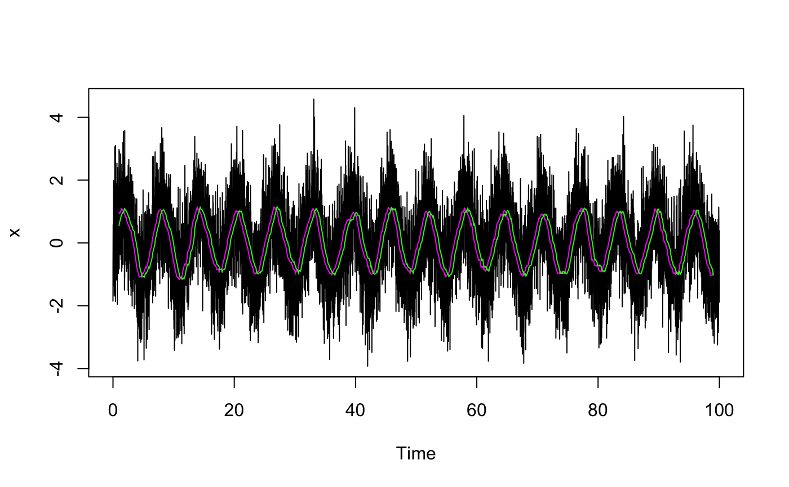

smooth_decimate.RdBoxcar smooth and decimate a time series
smooth_decimate(x, filterlength, downsamplefactor = NULL, start = NULL, end = NULL, frequency = NULL, deltat = NULL, extend = FALSE, sides = 2)
| x | time series to smooth (ts or mts) |
|---|---|
| filterlength | Size of smoothing kernel (in points) |
| downsamplefactor | Factor to reduce number of points |
| start, end | Defined start and end to remove NAs after filtering (units of time) |
| frequency, deltat | New frequency can be specified by either (or both if they are consistent). |
| extend | Logical. If true, the start and end values are allowed to extend the series. If false, attempts to extend the series give a warning and are ignored. |
| sides | 1=>convolution for past values, default 2=>centred on lag=0 |
time series object with call attribute
One of downsamplefactor, frequency or deltat must be specified.
downsamplefactor will take priority when available.
See filter for details about sides argument.
sides=1 (ie backwards) makes sense if you want to measure the start of a
peak (latency). sides=2 (centred, the default) makes sense if you want to
measure the mid-timepoint of the peak itself.
x=ts(rnorm(10000)+sin(1:10000/100),start=0,deltat=0.01) # smoothed xs=smooth_decimate(x,filterlength=100,downsamplefactor=10,start=1,end=99) # smoothed with causal filter (past values only) xsc=smooth_decimate(x,filterlength=100,downsamplefactor=10,start=1,end=99,sides=1) plot(x)